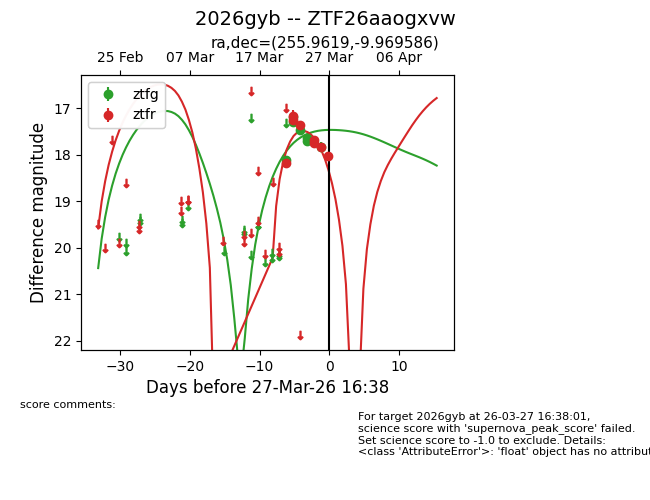
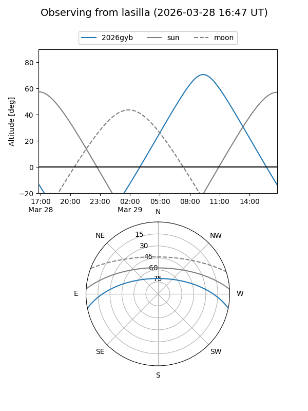
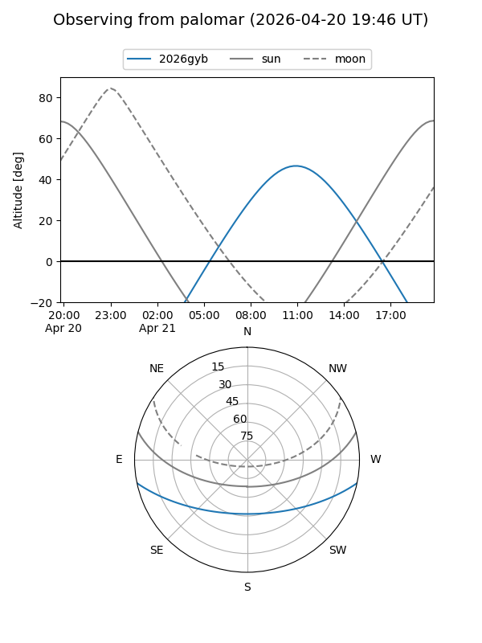
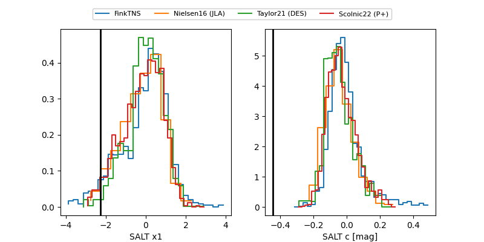

2026gyb
Target 2026gyb at 2026-03-27 16:40
Aliases and brokers:
FINK: link
Lasair: link
ALeRCE: link
TNS: link
YSE: link
alt names
ZTF26aaogxvw (ztf,fink_ztf)
2026gyb (tns,yse)
Coordinates:
equatorial (ra, dec) = 255.9619,-9.96959
equatorial (HMS+DMS) = 17:03:50.85,-09:58:10.51
galactic (l, b) = (10.7989,+18.51823)
Flags:
Photometry:
last ztfg=17.83, ztfr=18.03
7 ztfg, 8 ztfr detections
Lightcurve

Visibility


Additional plots
